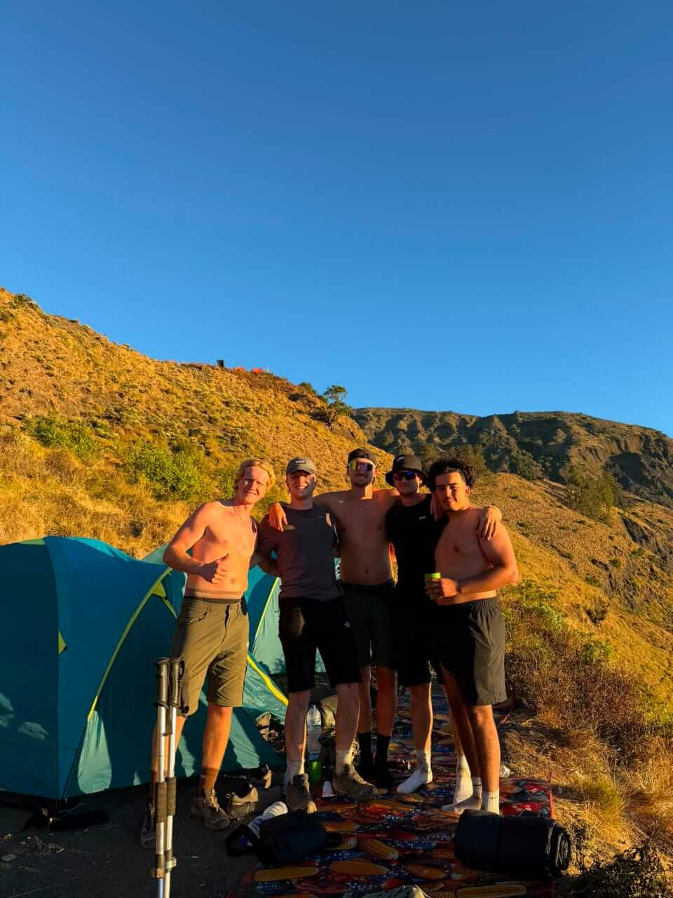
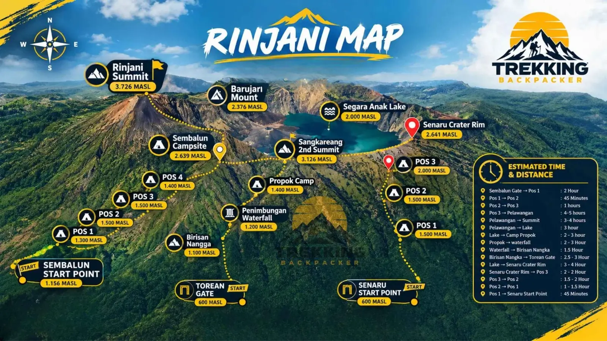
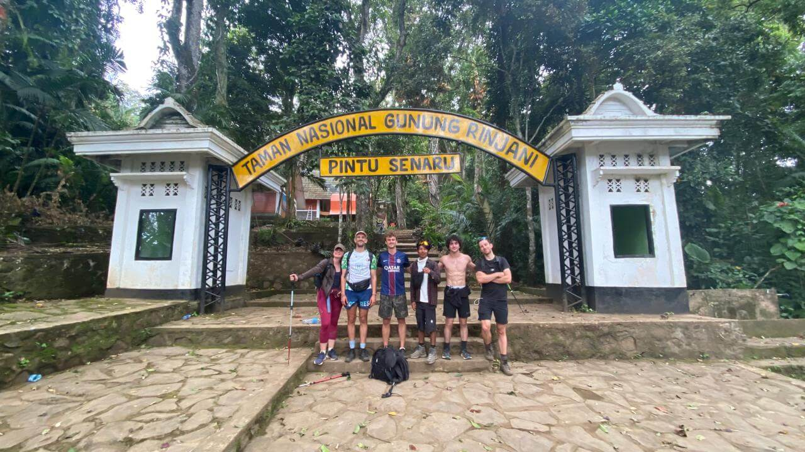
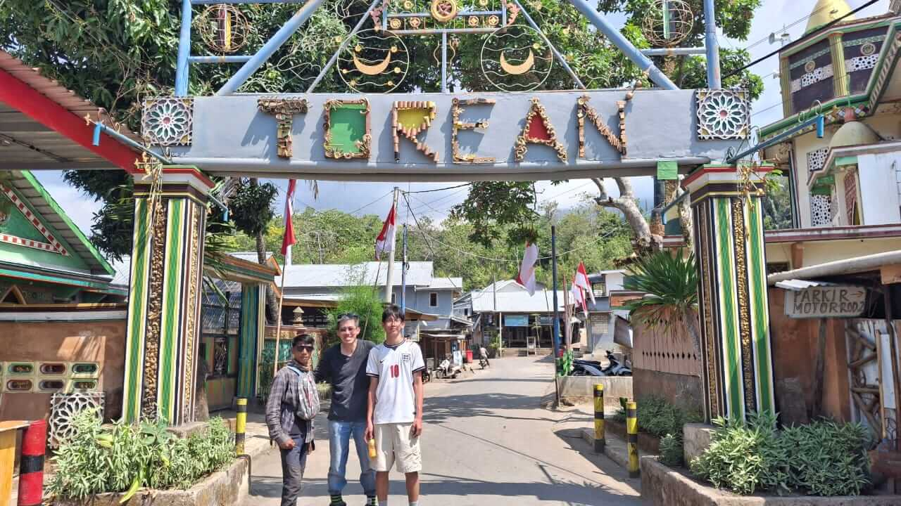

Sembalun Route
Wide open savanna and long ridges with big views all day. Sembalun is the starting point for every summit trek and the route we use on all summit packages.
Mount Rinjani has three main trekking routes. Our join group treks combine them so you see the best of each: the summit from Sembalun, the lake in the crater, and an exit through the rainforest of Senaru or the canyon of Torean.

Before you book a Rinjani join group trek, you should know where you are going. This Mount Rinjani route map shows the three official trails – Sembalun, Senaru and Torean – with the crater rim camps, Segara Anak lake, the hot springs and the summit.
Every sharing group trek on this website follows these trails, inside Mount Rinjani National Park. No hidden shortcuts, no surprise routes: what you see on the map is what you trek.
| Senaru village (start / finish) | 601 m |
| Sembalun village (start) | 1,156 m |
| Segara Anak lake & hot springs | ≈ 2,000 m |
| Sembalun crater rim camp | 2,639 m |
| Senaru crater rim camp | 2,641 m |
| Mount Rinjani summit | 3,726 m |

Wide open savanna and long ridges with big views all day. Sembalun is the starting point for every summit trek and the route we use on all summit packages.

A shady climb through tropical rainforest with monkeys and birdsong, ending at the Senaru crater rim with a classic view over Segara Anak lake and the small volcano inside.

The wild one: a dramatic descent from the lake through a deep valley with warm river streams, canyon walls and waterfalls. We use it as the exit route on our Sembalun – Torean packages.
| You want… | Choose this join group trek | Price |
|---|---|---|
| Crater rim view, short trip, no summit | 2D1N Senaru Crater Rim | From USD 118 |
| Summit, but only 2 days | 2D1N Sembalun Summit | From USD 118 |
| Summit + lake + hot springs (classic) | 3D2N Sembalun – Senaru | From USD 134 |
| Summit + lake + canyon & waterfalls | 3D2N Sembalun – Torean | From USD 134 |
| Everything at a relaxed pace | 4D3N Sembalun – Senaru | From USD 143 |
| Relaxed pace + full rest day at the lake | 4D3N Sembalun – Torean | From USD 143 |
Safety note: the last section to the summit is steep, loose volcanic gravel and it is cold and windy before sunrise. Always follow your guide's instructions, wear proper shoes and bring warm layers. Your guide may change the plan or turn the group around if the weather or trail is not safe.
Mount Rinjani (3,726 m) on the island of Lombok is the second-highest volcano in Indonesia. Inside its huge crater lies Segara Anak, a crescent-shaped lake at about 2,000 m, with a young volcano – Gunung Barujari – rising out of the water and natural hot springs on the shore. The mountain is protected as Mount Rinjani National Park and is part of the Rinjani-Lombok UNESCO Global Geopark.
The best time to trek is the dry season, roughly April to November. The park usually closes during the peak of the rainy season, so always check your dates with us before you travel.
Tell us your date, how many people, and whether you want Trek Only or Standard. We reply fast on WhatsApp.